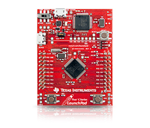
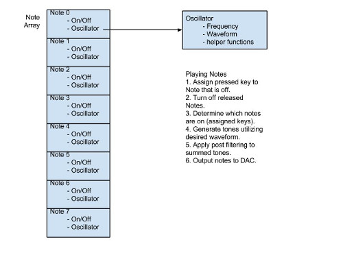
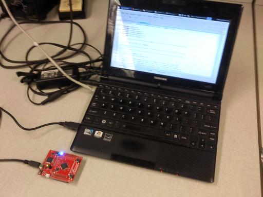
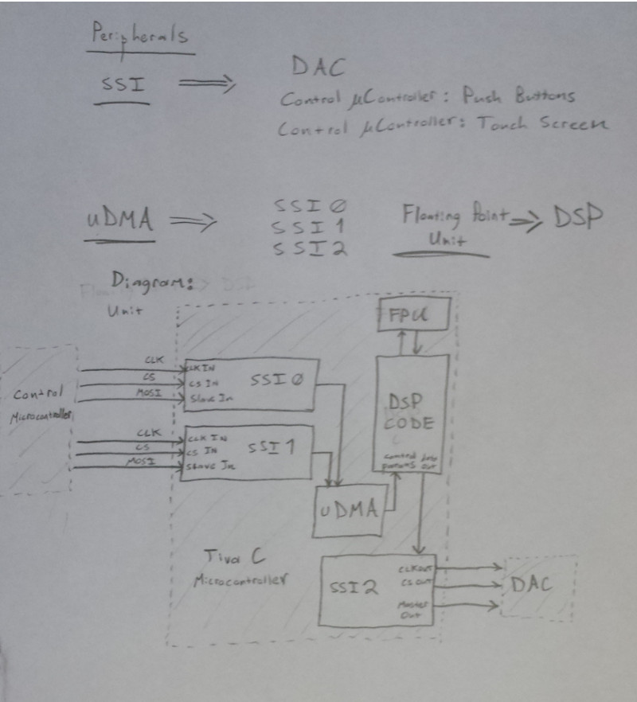

January 14, 2014 (2 hour):
Met as a team after class to discuss preliminary project proposal. Refined our initial
idea from last semester to a more concrete version. Design is set to have two modes of user
interface, as set of push buttons and at least one touch screen. Buttons will be utilized
to play notes where as the touch screen(s) will provide editing of synthesis parameters.
January 15, 2014 (2 hours):
Completed website layout and design.
January 16, 2014 (2 hours):
Worked with team remotely to complete preliminary project proposal.
WEEK 01 SUMMARY
Accomplishments: Submitted preliminary project proposal and completed website design.
Weekly Work Total: 6 hours
Project Work Total: 6 hours
January 24, 2014 (1 hours):
Added notebook section to webpage documents.
Ordered development board (TI Tiva C Launchpad) for software and hardware prototyping.
The Tiva C series was chosen due to its combined ability to handle control/logic signals
while providing powerful DSP functionality. DSP features are also improved by having a
dedicated floating point unit, easing the trouble of overflow when performing filtering
operations.

WEEK 02 SUMMARY
Accomplishments: Revised website and ordered development kit.
Weekly Work Total: 1 hours
Project Work Total: 7 hours
January 30, 2014 (2 hours):
Completed PCB homework assignment.
WEEK 03 SUMMARY
Accomplishments: Completed homework assignment
Weekly Work Total: 2 hours
Project Work Total: 9 hours
February 4th, 2014 (4 hours):
Built, installed, and tested GCC toolchain and GNU code flash tools with Tiva C development kit.
February 5th, 2014 (1 hours):
Added documentation to coding with Tiva C. Viewable here. This provides
help to installing and setting up command line tools for compiling and flashing code to the TIVA C
development board. Looked into setting up a debug environment, but there appears to be little to no
documentation available.
February 6th, 2014 (4 hours):
Ordered samples of Maxim MAX5216BGUA+ digital to analog converter. This is a 16 bit digital to analog
converter that operates at a maximum clock frequency of 50MHz. This implies that a 16 bit signal will
be transmitted at a frequency of 3.125 MHz, a total time of 0.32 micro-seconds which should allow a
high sample rate to be utilized when generating audio.
Met with team to brainstorm project ideas and view prior work that team members have done.
In regards to software development, discussed the polyphony constraints of the synthesizer.
It would not be possible or wise to allow a user to play an infinite ammount of notes, so it
was decided to limit the notes played to eight. The reasoning for this decision was that if
the thumbs are utilized as anchors for playing, only eight fingers left for playing notes.
This is also comprable/exceeds other synthesizers. For example the Korg Microkorg only has
four notes of polyphony.
A initial diagram for the software was drawn up providing an early framework of the note
generation scheme. The diagram can be viewed in the picture below.

WEEK 04 SUMMARY
Accomplishments: Configured system and provided documentation to writing code to Tiva C launchpad.
Ordered samples of digital to analog converter.
Met with team to discuss direction of project.
Weekly Work Total: 8 hours
Project Work Total: 17 hours
February 10, 2014 (2 hours):
Attempted to set up Code Composer Studio under a Linux environment in order to utilize its
debugging capabilities. Decision to make use of Code Composer Studio was also motivated by
discovering that it can be utilized for free as long as either the Tiva C development board
is utilized or the XDS100 JTAG programmer is used. Unfortunately, there appears to be multiple
issues when running under Linux. Was able to compile the code, but not flash or debug the code.
February 11, 2014 (3 hours):
Discussed packaging constraints for our project with the rest of our team. Ran through multiple
designs and provided critical review ehen needed.
Also recieved help from Kyle for setting up Eclipse under Linux. Was able to successfully compile,
flash, and debug code on the Tiva C development board.

February 12, 2014 (2 hours):
Met with the team during the mandatory lab session and began to finalize the packaging constraints.
Further work is going to be required to size the PCB in order to meet the size dimensions allowable
under the coarse funding.
Began looking at the Tiva C reference documents for the peripherals required for this project. For the
audio microcontroller, my portion of the project, it was decided to utilize SPI to transmit control
parameters and note information from the other microcontroller dedicated to handling user input. In
addition, SPI will be utilized to send information to the external digital to analog converter. Other
peripherals to be utilized include the uDMA module, providing direct memory access channels for nonblocking
data transmision from the SPI communications, and the Floating Point Unit for DSP routines. A initial
diagram can be viewed below.

WEEK 05 SUMMARY
Accomplishments: Completed packaging homework assignment. Fully installed and tested coding environment. Determined peripherals that need to be
configured and their flow within the software.
Weekly Work Total: 7 hours
Project Work Total: 24 hours
{kind=link}